Chapter 6 xgxr
6.1 Overview
This document contains exploratory plots for single ascending dose PK data as well as the R code that generates these graphs. The plots presented here are based on simulated data (see: PKPD Datasets). You may also download the Single Ascending Dose PK dataset for your reference (download dataset). Data specifications can be accessed on Datasets and Rmarkdown template to generate this page can be found on Rmarkdown-Template. ## Setup
library(ggplot2)
library(dplyr)
library(tidyr)
library(xgxr)
#flag for labeling figures as draft
status = "DRAFT"
# ggplot settings
xgx_theme_set()
#directories for saving individual graphs
dirs = list(
parent_dir = "Parent_Directory",
rscript_dir = "./",
rscript_name = "Example.R",
results_dir = "./",
filename_prefix = "",
filename = "Example.png")6.2 Load Dataset
#load dataset
pkpd_data <- read.csv("data/Single_Ascending_Dose_Dataset2.csv")
#ensure dataset has all the necessary columns
pkpd_data = pkpd_data %>%
mutate(ID = ID, #ID column
TIME = TIME, #TIME column name, time relative to first dose
NOMTIME = NOMTIME,#NOMINAL TIME column name
EVID = EVID ,#EVENT ID, >=1 is dose, otherwise measurement
LIDV = LIDV, #DEPENDENT VARIABLE column name
CENS = CENS, #CENSORING column name
CMT = CMT, #COMPARTMENT column
DOSE = DOSE, #DOSE column here (numeric value)
TRTACT = TRTACT, #DOSE REGIMEN column here (character, with units),
LIDV_NORM = LIDV/DOSE,
LIDV_UNIT = ifelse(CMT==2, "ng/ml", NA )
)
#create a factor for the treatment variable for plotting
pkpd_data = pkpd_data %>%
arrange(DOSE) %>%
mutate(TRTACT_low2high = factor(TRTACT, levels = unique(TRTACT)),
TRTACT_high2low = factor(TRTACT, levels = rev(unique(TRTACT)))) %>%
select(-TRTACT)
#create pk dataset
pk_data <- pkpd_data %>%
filter(CMT==2)
#perform NCA, for additional plots
NCA = pk_data %>%
group_by(ID, DOSE) %>%
filter(!is.na(LIDV)) %>%
summarize(AUC_last = caTools::trapz(TIME,LIDV),
Cmax = max(LIDV),
SEX = SEX[1], #this part just keeps the SEX and WEIGHTB covariates
WEIGHTB = WEIGHTB[1]) %>%
gather(PARAM, VALUE,-c(ID, DOSE, SEX, WEIGHTB)) %>%
ungroup() %>%
mutate(VALUE_NORM = VALUE/DOSE)
#units and labels
time_units_dataset = "hours"
time_units_plot = "days"
trtact_label = "Dose"
dose_label = "Dose (mg)"
conc_units = "ng/ml"
AUC_units = paste0("h.", conc_units)
conc_label = paste0("Concentration (", conc_units, ")")
concnorm_label = paste0("Normalized Concentration (", conc_units, ")/mg")6.3 Provide an overview of the data
Summarize the data in a way that is easy to visualize the general trend of PK over time and between doses. Using summary statistics can be helpful, e.g. Mean +/- SE, or median, 5th & 95th percentiles. Consider either coloring by dose or faceting by dose. Depending on the amount of data one graph may be better than the other.
When looking at summaries of PK over time, there are several things to observe. Note the number of doses and number of time points or sampling schedule. Observe the overall shape of the average profiles. What is the average Cmax per dose? Tmax? Does the elimination phase appear to be parallel across the different doses? Is there separation between the profiles for different doses? Can you make a visual estimate of the number of compartments that would be needed in a PK model? ### Concentration over time, colored by Dose, mean +/- 95% CI
gg <- ggplot(data = pk_data, aes(x = NOMTIME, y = LIDV, group= TRTACT_high2low, color = TRTACT_high2low))
gg <- gg + xgx_stat_ci(conf_level = .95)
gg <- gg + xgx_scale_y_log10()
gg <- gg + xgx_scale_x_time_units(units_dataset = time_units_dataset,
units_plot = time_units_plot)
gg <- gg + labs(y=conc_label,color = trtact_label)
gg <- gg + xgx_annotate_status(status)
gg <- gg + xgx_annotate_filenames(dirs)
#if saving copy of figure, replace xgx_annotate lines with xgx_save() shown below:
#xgx_save(width,height,dirs,"filename_main",status)
print(gg)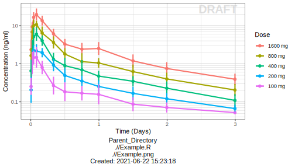
6.3.1 Concentration over time, faceted by Dose, mean +/- 95% CI, overlaid on gray spaghetti plots
gg <- ggplot(data = pk_data, aes(x = TIME, y = LIDV))
gg <- gg + geom_line(aes(group = ID), color = rgb(0.5,0.5,0.5), size = 1, alpha = 0.3)
gg <- gg + geom_point(aes(color = factor(CENS), shape = factor(CENS), alpha = 0.3), size = 2, alpha = 0.3)
gg <- gg + scale_shape_manual(values=c(1,8))
gg <- gg + scale_color_manual(values=c("grey50","red"))
gg <- gg + xgx_stat_ci(aes(x = NOMTIME, color=NULL, group=NULL), conf_level = 0.95)
gg <- gg + xgx_scale_y_log10()
gg <- gg + xgx_scale_x_time_units(units_dataset = time_units_dataset,
units_plot = time_units_plot)
gg <- gg + labs(y=conc_label,color = trtact_label)
gg <- gg + theme(legend.position="none") + facet_grid(.~TRTACT_low2high)
gg <- gg + xgx_annotate_status(status)
gg <- gg + xgx_annotate_filenames(dirs)
#if saving copy of figure, replace xgx_annotate lines with xgx_save() shown below:
#xgx_save(width,height,dirs,"filename_main",status)
print(gg)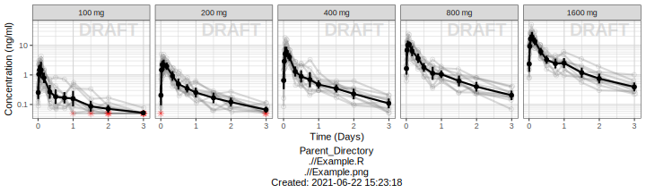
6.4 Assess the dose linearity of exposure
6.4.1 Dose Normalized Concentration over time, colored by Dose, mean +/- 95% CI
gg <- ggplot(data = pk_data,
aes(x = NOMTIME, y = LIDV_NORM,
group = TRTACT_high2low, color = TRTACT_high2low))
gg <- gg + xgx_stat_ci(conf_level = 0.95, alpha = 0.5, position = position_dodge(1))
gg <- gg + xgx_scale_y_log10()
gg <- gg + xgx_scale_x_time_units(units_dataset = time_units_dataset,
units_plot = time_units_plot)
gg <- gg + labs(y=concnorm_label, color = trtact_label)
gg <- gg + xgx_annotate_status(status)
gg <- gg + xgx_annotate_filenames(dirs)
#if saving copy of figure, replace xgx_annotate lines with xgx_save() shown below:
#xgx_save(width,height,dirs,"filename_main",status)
print(gg)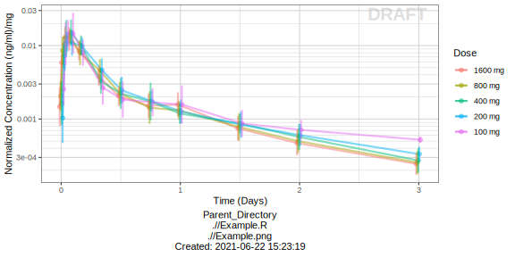
6.4.2 NCA of dose normalized AUC and Cmax vs Dose
Observe the dose normalized AUC and Cmax over different doses. Does the relationship appear to be constant across doses or do some doses stand out from the rest? Can you think of reasons why some would stand out? For example, the lowest dose may have dose normalized AUC much higher than the rest, could this be due to BLQ observations? If the highest doses have dose normalized AUC much higher than the others, could this be due to nonlinear clearance, with clearance saturating at higher doses? If the highest doses have dose normalized AUC much lower than the others, could there be saturation of bioavailability, reaching the maximum absorbable dose?
gg <- ggplot(data = NCA, aes(x = DOSE, y = VALUE_NORM))
gg <- gg + geom_boxplot(aes(group = DOSE))
gg <- gg + geom_smooth(method = "lm", color = "black")
gg <- gg + facet_wrap(~PARAM, scales = "free_y")
gg <- gg + labs(x = dose_label, y = concnorm_label)
gg <- gg + xgx_annotate_status(status)
gg <- gg + xgx_annotate_filenames(dirs)
#if saving copy of figure, replace xgx_annotate lines with xgx_save() shown below:
#xgx_save(width,height,dirs,"filename_main",status)
print(gg)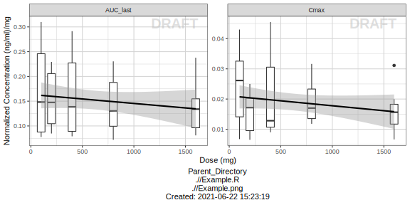
6.5 Explore variability
Now that the overall trends in the mean data have been observed, look into the between subject variability by plotting spaghetti plots. Consider again whether to color by dose or facet by dose. If coloring by dose, do the individuals in the different dose groups overlap across doses? Does there seem to be more variability at higher or lower concentrations? ### Concentration over time, colored by Dose, dots and lines grouped by individual
gg <- ggplot(data = pk_data, aes(x = TIME, y = LIDV))
gg <- gg + geom_line(aes(group = ID, color = factor(TRTACT_high2low)), size = 1, alpha = 0.5)
gg <- gg + geom_point(data = pk_data %>% filter(CENS==0), aes(color = TRTACT_high2low), size = 2, alpha = 0.5)
gg <- gg + geom_point(data = pk_data %>% filter(CENS==1), color="red", shape=8, size = 2, alpha = 0.5)
gg <- gg + xgx_scale_y_log10()
gg <- gg + xgx_scale_x_time_units(units_dataset = time_units_dataset,
units_plot = time_units_plot)
gg <- gg + labs(y = conc_label, color = trtact_label)
gg <- gg + xgx_annotate_status(status)
gg <- gg + xgx_annotate_filenames(dirs)
#if saving copy of figure, replace xgx_annotate lines with xgx_save() shown below:
#xgx_save(width,height,dirs,"filename_main",status)
print(gg)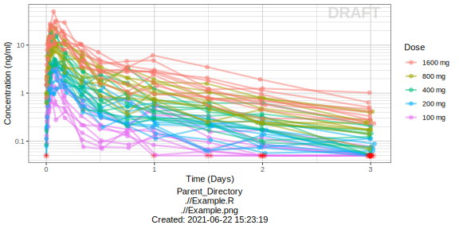
6.5.1 Concentration over time, faceted by Dose, dots and lines grouped by individual
gg <- ggplot(data = pk_data, aes(x = TIME, y = LIDV))
gg <- gg + geom_line(aes(group = ID), size = 1, alpha = 0.2)
gg <- gg + geom_point(aes(color = factor(CENS), shape = factor(CENS), alpha = 0.3), size = 2, alpha = 0.2)
gg <- gg + scale_shape_manual(values=c(1,8))
gg <- gg + scale_color_manual(values=c("grey50","red"))
gg <- gg + xgx_scale_y_log10()
gg <- gg + xgx_scale_x_time_units(units_dataset = time_units_dataset,
units_plot = time_units_plot)
gg <- gg + labs(y = conc_label, shape = "BLQ", color = "BLQ")
gg <- gg + facet_grid(.~TRTACT_low2high)
gg <- gg + xgx_annotate_status(status)
gg <- gg + xgx_annotate_filenames(dirs)
#if saving copy of figure, replace xgx_annotate lines with xgx_save() shown below:
#xgx_save(width,height,dirs,"filename_main",status)
print(gg)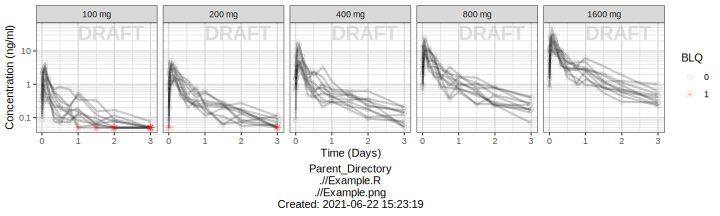
6.6 Explore irregularities in profiles
Plot individual profiles in order to inspect them for any irregularities. Inspect the profiles for outlying data points that may skew results or bias conclusions. Looking at the shapes of the individual profiles now, do they support your observations made about the mean profile (e.g. number of compartments, typical Cmax, Tmax)?
Plotting individual profiles on top of gray spaghetti plots puts individual profiles into context, and may help identify outlying individuals for further inspection. Are there any individuals that appear to have very high or low Cmax compared to others within the same dose group? What about the timing of Cmax? What about the slope of the elimination phase? Does it appear that any subjects could have received an incorrect dose? ### Concentration over time, faceted by individual, individual line plots overlaid on gray spaghetti plots for that dose group
pk_data_rep_by_trt <- list()
for(id in unique(pk_data$ID)){
indiv_data <- pk_data %>% subset(ID == id)
itrtact = unique(indiv_data$TRTACT_low2high)
pk_data_rep_by_trt[[as.character(id)]] <- pk_data %>%
subset(TRTACT_low2high == itrtact) %>%
mutate(ID_rep_by_trt = ID, ID = id)
}
pk_data_rep_by_trt <- bind_rows(pk_data_rep_by_trt)
gg <- ggplot(mapping = aes(x = TIME, y = LIDV))
gg <- gg + geom_line(data = pk_data_rep_by_trt,
aes(group = ID_rep_by_trt),
size = 1, color = rgb(0.5,0.5,0.5), alpha = 0.3)
gg <- gg + geom_line(data = pk_data,
aes(group = ID), size = 1)
gg <- gg + geom_point(data = pk_data %>% filter(CENS==1),
color="red", shape=8, size = 2)
gg <- gg + xgx_scale_y_log10()
gg <- gg + xgx_scale_x_time_units(units_dataset = time_units_dataset,
units_plot = time_units_plot)
gg <- gg + labs(y = conc_label)
gg <- gg + theme(legend.position="none")
gg <- gg + facet_wrap(~ID + TRTACT_low2high,
ncol = 10 )
gg <- gg + theme(panel.grid.minor.x = ggplot2::element_line(color = rgb(0.9,0.9,0.9)),
panel.grid.minor.y = ggplot2::element_line(color = rgb(0.9,0.9,0.9)))
gg <- gg + xgx_annotate_status(status, fontsize = 4, color=rgb(0.5,0.5,1))
gg <- gg + xgx_annotate_filenames(dirs)
#if saving copy of figure, replace xgx_annotate lines with xgx_save() shown below:
#xgx_save(width,height,dirs,"filename_main",status)
print(gg)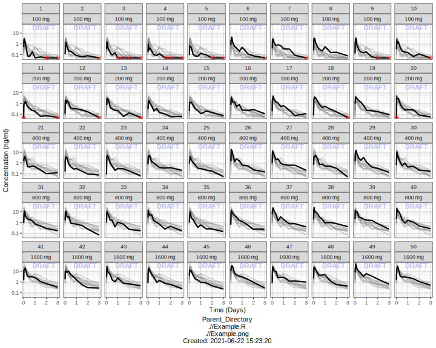
6.7 Explore covariate effects on PK
6.7.1 Concentration over time, colored by categorical covariate, mean +/- 95% CI
gg <- ggplot(data = pk_data, aes(x = NOMTIME, y = LIDV, color = SEX))
gg <- gg + xgx_stat_ci(conf_level = 0.95)
gg <- gg + xgx_scale_y_log10()
gg <- gg + xgx_scale_x_time_units(units_dataset = time_units_dataset,
units_plot = time_units_plot)
gg <- gg + labs(y = conc_label)
gg <- gg + facet_grid(.~TRTACT_low2high)
gg <- gg + xgx_annotate_status(status)
gg <- gg + xgx_annotate_filenames(dirs)
#if saving copy of figure, replace xgx_annotate lines with xgx_save() shown below:
#xgx_save(width,height,dirs,"filename_main",status)
print(gg)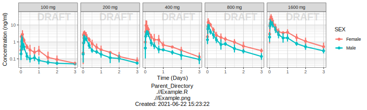
print(gg + aes(group= WEIGHTB>70, color = WEIGHTB>70) )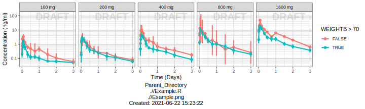
6.7.2 Dose Normalized Concentration over time, colored by categorical covariate, mean +/- 95% CI
gg <- ggplot(data = pk_data,
aes(x = NOMTIME,
y = LIDV_NORM,
color = SEX))
gg <- gg + xgx_stat_ci(conf_level = 0.95)
gg <- gg + xgx_scale_y_log10()
gg <- gg + xgx_scale_x_time_units(units_dataset = time_units_dataset,
units_plot = time_units_plot)
gg <- gg + ylab(concnorm_label)
gg <- gg + xgx_annotate_status(status)
gg <- gg + xgx_annotate_filenames(dirs)
#if saving copy of figure, replace xgx_annotate lines with xgx_save() shown below:
#xgx_save(width,height,dirs,"filename_main",status)
print(gg)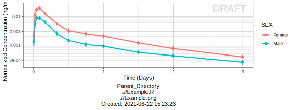
print(gg+ aes(color = WEIGHTB>70))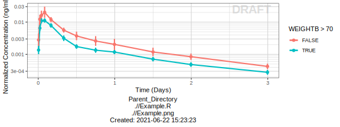
gg <- ggplot(data = NCA, aes(x = SEX, y = VALUE_NORM))
gg <- gg + geom_boxplot(aes(group = SEX))
gg <- gg + ylab("") + xlab("Sex")
gg <- gg + facet_wrap(~PARAM, scales = "free_y")
gg <- gg + xgx_annotate_status(status)
gg <- gg + xgx_annotate_filenames(dirs)
#if saving copy of figure, replace xgx_annotate lines with xgx_save() shown below:
#xgx_save(width,height,dirs,"filename_main",status)
print(gg)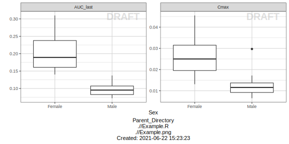
gg <- ggplot(data = NCA, aes(x = WEIGHTB, y = VALUE_NORM))
gg <- gg + geom_point()
gg <- gg + ylab("") + xlab("Body Weight (kg)")
gg <- gg + facet_wrap(~PARAM, scales = "free_y")
gg <- gg + geom_smooth(method="lm")
gg <- gg + xgx_annotate_status(status)
gg <- gg + xgx_annotate_filenames(dirs)
#if saving copy of figure, replace xgx_annotate lines with xgx_save() shown below:
#xgx_save(width,height,dirs,"filename_main",status)
print(gg)
gg + aes(color = SEX)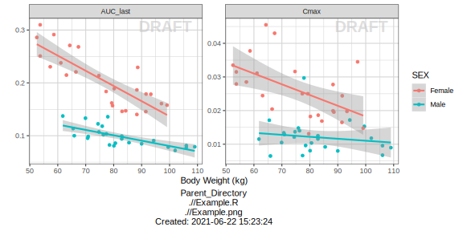
6.8 R Session Info
sessionInfo()## R version 4.1.0 (2021-05-18)
## Platform: x86_64-apple-darwin20.4.0 (64-bit)
## Running under: macOS Big Sur 11.2.3
##
## Matrix products: default
## BLAS: /usr/local/Cellar/openblas/0.3.15_1/lib/libopenblasp-r0.3.15.dylib
## LAPACK: /usr/local/Cellar/r/4.1.0/lib/R/lib/libRlapack.dylib
##
## locale:
## [1] en_US.UTF-8/en_US.UTF-8/en_US.UTF-8/C/en_US.UTF-8/en_US.UTF-8
##
## attached base packages:
## [1] grid stats graphics grDevices utils
## [6] datasets methods base
##
## other attached packages:
## [1] xgxr_1.1.1 wnl_0.6.1
## [3] numDeriv_2016.8-1.1 BE_0.1.2
## [5] pkr_0.1.2 forestplot_1.10.1
## [7] checkmate_2.0.0 magrittr_2.0.1
## [9] binr_1.1 foreign_0.8-81
## [11] ncar_0.4.3 rtf_0.4-14.1
## [13] NonCompart_0.4.8 forcats_0.5.1
## [15] stringr_1.4.0 dplyr_1.0.7
## [17] purrr_0.3.4 tidyr_1.1.3
## [19] tibble_3.1.2 ggplot2_3.3.4
## [21] tidyverse_1.3.1 knitr_1.33
## [23] readr_1.4.0 readxl_1.3.1
## [25] kableExtra_1.3.4 pacman_0.5.1
##
## loaded via a namespace (and not attached):
## [1] colorspace_2.0-1 ellipsis_0.3.2
## [3] class_7.3-19 htmlTable_2.2.1
## [5] base64enc_0.1-3 fs_1.5.0
## [7] gld_2.6.2 rstudioapi_0.13
## [9] proxy_0.4-26 farver_2.1.0
## [11] Deriv_4.1.3 fansi_0.5.0
## [13] mvtnorm_1.1-2 lubridate_1.7.10
## [15] xml2_1.3.2 splines_4.1.0
## [17] R.methodsS3_1.8.1 mnormt_2.0.2
## [19] rootSolve_1.8.2.1 Formula_1.2-4
## [21] jsonlite_1.7.2 binom_1.1-1
## [23] broom_0.7.7 cluster_2.1.2
## [25] dbplyr_2.1.1 png_0.1-7
## [27] R.oo_1.24.0 compiler_4.1.0
## [29] httr_1.4.2 backports_1.2.1
## [31] assertthat_0.2.1 Matrix_1.3-4
## [33] cli_2.5.0 htmltools_0.5.1.1
## [35] tools_4.1.0 gtable_0.3.0
## [37] glue_1.4.2 lmom_2.8
## [39] Rcpp_1.0.6 cellranger_1.1.0
## [41] jquerylib_0.1.4 vctrs_0.3.8
## [43] svglite_2.0.0 nlme_3.1-152
## [45] psych_2.1.6 xfun_0.24
## [47] ps_1.6.0 rvest_1.0.0
## [49] lifecycle_1.0.0 MASS_7.3-54
## [51] scales_1.1.1 hms_1.1.0
## [53] parallel_4.1.0 expm_0.999-6
## [55] RColorBrewer_1.1-2 yaml_2.2.1
## [57] Exact_2.1 gridExtra_2.3
## [59] pander_0.6.4 sass_0.4.0
## [61] rpart_4.1-15 latticeExtra_0.6-29
## [63] stringi_1.6.2 highr_0.9
## [65] e1071_1.7-7 caTools_1.18.2
## [67] boot_1.3-28 bitops_1.0-7
## [69] rlang_0.4.11 pkgconfig_2.0.3
## [71] systemfonts_1.0.2 evaluate_0.14
## [73] lattice_0.20-44 htmlwidgets_1.5.3
## [75] labeling_0.4.2 tidyselect_1.1.1
## [77] bookdown_0.22 R6_2.5.0
## [79] DescTools_0.99.42 generics_0.1.0
## [81] Hmisc_4.5-0 DBI_1.1.1
## [83] mgcv_1.8-36 pillar_1.6.1
## [85] haven_2.4.1 withr_2.4.2
## [87] RCurl_1.98-1.3 nnet_7.3-16
## [89] survival_3.2-11 modelr_0.1.8
## [91] crayon_1.4.1 utf8_1.2.1
## [93] tmvnsim_1.0-2 rmarkdown_2.9
## [95] jpeg_0.1-8.1 minpack.lm_1.2-1
## [97] data.table_1.14.0 reprex_2.0.0
## [99] digest_0.6.27 webshot_0.5.2
## [101] munsell_0.5.0 viridisLite_0.4.0
## [103] bslib_0.2.5.1